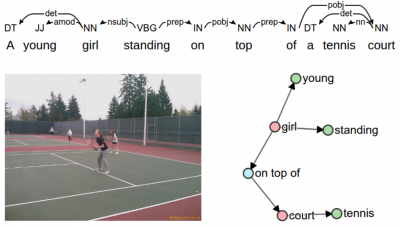
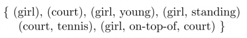

评价指标对于我的 audio caption 任务一直是一个 bottleneck，机器自动给生成的 caption 打的分数总是难以反映其质量，在此回顾一下常用的 caption 任务的自动评测指标，包括近年来提出的一些还未广泛使用的新指标。
自然语言生成 (Natural Language Generation) 的评价一直是难题。以句子翻译为例，一个英文句子可能对应好几种中文的表述，即 candidate 和 reference 是一对多的关系，甚至可能出现翻译正确但是不在 references 中的情况；另外评价指标应该既能评价翻译句子的准确性，又能兼顾到句子的通顺程度。这对于自动评测来说是一件比较难的事。
自 2002 年 BLEU 的提出以来，NLG 的评价指标一直是 NLP 领域的一个研究课题，这里对我平时在 audio caption 中用到的或者看到的评价指标稍稍做一个总结，主要看思路，能不放公式就尽量不放。
早期的几个指标 (BLEU、ROUGE、METEOR) 都是针对机器翻译的，那时候 NLG 也只有机器翻译领域有一些进展。
BLEU
2002 年提出，想法非常 naive，就是看 precision，换句话说就是 candidate 中的词 (准确地说是 $n−gram$) 有多少在 references 中出现过，计算出现过的比例。
最后的分数是各个 $n$ 计算的 precision 的加权和，一般权值都是是 $\frac{1}{n}$。
BLEU 的设计就考虑到了准确度和流畅度两个方面，因为 $1−gram$ 反映了描述的逐词准确度，$n$ 增大时就计算的是词组重合度了，反映了描述的流畅度。
使用的 trick:
对 precision 做了 clip，precision 的分子取 $n-gram$ 在 candidate 和 references 出现次数的较小值。如果有的词在 candidate 中出现了很多次而 references 中只有一次，那么只计算一次，避免类似 “the the the the” 这样的停用词干扰
对句子长度做了个 penalty，如果 candidate 长度比 reference 长度短，就乘上一个小于 1 的惩罚因子。因为“言多必失”，基于 precision 的指标天然有“少说少错”的缺点，短句的 BLEU 通常得分高
ROUGE
2004 年提出，和 BLEU 差不多，但是关注 recall 而不是 precision。文章提出了 ROUGE-N、ROUGE-L、ROUGE-W、ROUGE-S 等多种指标，其中 ROUGE-N 几乎就是一个 recall 版的 BLEU，拿各个 reference 中被翻译到的词数除以各个 reference 的总词数得到。
我任务中常用 ROUGE-L 这个指标，特点是计算 LCS (Longest Common Subsequence) 的重合度，具体来说是 LCS 的 F1。LCS 就是那道动态规划经典题目，可以高效地算出。多个 reference 的情况下怎么算要看具体实现，pycocoevalcap 中的实现是取各个 reference 的 precision 和 recall 的最大值算 F1
METEOR
2007 年提出，也是算的 F1，不过是 unigram 的 F1，并且加了一些 trick：
- 词干化 + 近义词 normalization，这里用到了 WordNet 先验知识将近义词及词的不同形式 map 到同一个词
- 加了 chunk 数的 penalty。chunck 数表示既在 candidate 中又在 reference 中的连续词块数，比如 “w1 w2 w3 w4 w5” 和 “w1 w2 w4 w5” 对应下来 chunk 数为 2 (w1 w2 / w4 w5)
- 取各个 reference 算出的 METEOR 分数的最大值
这个指标需要 WordNet，所以用起来有些限制，而且很久以来只能用 java 跑 (官网上只提供了 jar 包，现在 nltk 也实现了)。如果看具体公式的话，会发现还有三个可以调的超参数 (虽然我们平时都用默认的值)，真的很麻烦啊。
可以看出，上面三个指标都是基于 $n-gram$ 的 overlap 的，尽管加了很多 trick，本质依然没变，无非是关注 precision / recall / F-1 和各种魔改 penalty 的区别。
随着 CNN、RNN 大火，NMT、image caption 都在近几年有了突破性的发展，随之而来的是更复杂的评价指标。
CIDEr
CIDEr 是针对 image caption 提出的指标，它的思路跳出了数 $n-gram$ 的 overlap 的框架，它把 candidate 和 reference 都 encode 成一个向量，然后用两个向量的余弦相似度表示 caption 的质量，多个 reference 的情况下就是和各个 reference 算出来的分数的平均。最后同样是各个 $n$ 算出来分数的加权和。
那么句子是怎么 encode 成向量的呢？把所有图片的 references 当成一个文档，用的是各个 $n-gram$ 的 TF-IDF，意思是 TF 是这个词在句子中的词频，IDF 是这个词在所有 references 中的 IDF。
这个指标有些考虑到不同词权重的意思了，但并不是显式地给每个词算相似度的过程中加 TF-IDF 的权重，而是拿 TF-IDF 当句子的特征。这样做是否更加关注了低频词呢？有待考证。
另外注意：
- CIDEr 没有显式地计算 precision 和 recall
- 因为要算 IDF，所以计算某个句子分数时，不光需要这个句子的标注，还需要全体 image 的标注，所以 scale 能力差一些
SPICE
SPICE 也是针对 image caption 问题提出的。这个指标的思路就更加 task-specific了：
image caption 的重点是需要将图片中的 object、attribute 以及 relation 准确表述出来，所以先用 scene graph parser 将句子解析成一张 scene graph， 表示 objects、objects 之间的关系、objects 的属性，由 scene graph 又可以生成一个 tuple set (见下图)


那么 candidate 和 references 各得到一个 tuple set，计算两个 tuple set 的重合度 (F1)
Notes:
- 考虑到 image caption 这个任务与普通 NLG 相比的特点了，重点关注名词 (objects)
- 需要 scene graph parser，并非简单的规则，跑起来比较慢
- 算 tuple 匹配的时候也用到了 WordNet 先验知识，近义词也匹配
总结
由这些指标的变化可以看出，评价指标逐渐从 rule-based 走向 model-based，由 hard 的 overlap 走向 soft 的 similarity，比较对象也不一定是 $n-gram$，可能是由句子生成的其它对象 (比如 SPICE 的 tuple set)，总之这个评价指标还不够完善，一个好的评价指标应该具有以下特点：
- 区分性高，不同质量的句子的得分差距要大一些，最好分数值在 0 ~ 1 之间
- 用同样的方法得出的人的标注得分应当高于模型输出 (毕竟现在生成模型还没有比人更牛逼)
- 计算不应过于复杂，不应用很高昂的代价仅仅做评价这件事
- 能反映句子的整体句义相似程度而不是单单词的匹配
- 最好能有好的 scalability，对大数据集也适用
- 针对特定任务要考虑特定任务的目标，比如 image caption 关注 object，audio caption 关注 sound event，video caption 关注 object 的动作，这些关注的事物要在 caption 中描述到，而其余的修饰语没那么重要